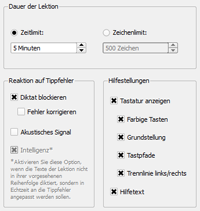

Schreibtraining | Inhaltsverzeichnis | Trainingsablauf
6.2 Trainingsparameter
Auf der rechten Seite des Startfensters können Sie die Trainingsparameter einstellen. Diese sind untergliedert in drei Bereiche.

6.2.1 Dauer der Lektion
Da das Diktat der Übungslektionen in Abhängigkeit von Ihren Tippfehlern unterschiedlich ausfällt, lässt sich die Dauer der Lektion normalerweise nur auf zwei Arten festlegen. Entweder über ein Zeitlimit oder über die Anzahl der zu diktierenden Zeichen (Zeichenlimit). Bei freien und eigenen Lektionen lässt sich bei deaktivierter Intelligenz auch Gesamte Lektion auswählen, damit die Texte der Lektion von Anfang bis Ende genau einmal diktiert werden.
Nach der Installation der Software ist eine Zeitdauer von fünf Minuten voreingestellt. Eine Zeitdauer von fünf Minuten entspricht, bei fehlerfreier Eingabe und einer Schreibgeschwindigkeit von 100 Anschlägen pro Minute, einem Zeichenlimit von 500 Zeichen.
Hinweis: Wenn Sie die Intelligenz (siehe weiter unten) deaktivieren, wird automatisch die Option Gesamte Lektion ausgewählt. Sie können diese Automatik in den Grundeinstellungen abschalten (siehe Kapitel 7.4).
6.2.2 Reaktion auf Tippfehler
Der Schreibtrainer bietet Ihnen unterschiedliche Möglichkeiten, auf Ihre Tippfehler zu reagieren.
Tippfehler blockieren bedeutet, dass das Diktat bei jedem Tippfehler stoppt und darauf wartet, dass Sie dann die korrekte Taste drücken. Das Zeichen, das fehlerhaft eingegeben wurde, wird im Lauftext orange markiert. Diese Option ist nach der Installation der Software voreingestellt. Wird die Option deaktiviert, werden Ihre Tippfehler zwar gezählt, jedoch übergeht der Schreibtrainer den Fehler und fordert Sie auf, sofort das nächste Zeichen einzugeben.
Ist Tippfehler blockieren aktiviert, haben Sie zusätzlich die Möglichkeit, die Option Tippfehler korrigieren zu selektieren. Tippfehler korrigieren bedeutet, dass Sie jeden Tippfehler zuerst mit der Rücklauftaste löschen müssen, bevor Sie die korrekte Taste drücken und damit das Schreibtraining fortsetzen können. Diese Option entspricht am ehesten der Realität, sie ist jedoch nach der Installation nicht voreingestellt, da sie nur für fortgeschrittene Benutzer geeignet ist.
Wünschen Sie bei jedem Tippfehler ein akustisches Signal, das über die Soundkarte oder in Form eines Pieptons über den PC-internen Lautsprecher ausgegeben wird (siehe Grundeinstellungen im Kapitel 7.1), markieren Sie die Option Akustisches Signal mit einem Mausklick.
Die Option Intelligenz ist nur bei freien und eigenen Lektionen aktiv. Bei Übungslektionen ist die Intelligenz stets eingeschaltet, daher ist die Option dann grau hinterlegt.
Wenn die Intelligenz aktiviert ist, werden die Zeilen (Worte oder Sätze) des Diktats nicht der Reihenfolge nach diktiert, sondern abhängig von den Tippfehler-Quoten die aktuell für den Lernerfolg sinnvollste Zeile in das Diktat einbezogen. Dies kann sehr sinnvoll sein, wenn Sie gezielt bestimmte Gewohnheitsfehler loswerden wollen, allerdings ergibt der Text des Diktats meist wenig oder keinen Sinn.
Ist die Intelligenz abgeschaltet, wird das Diktat in der vorgesehenen Reihenfolge diktiert und Sie können bei der Dauer der Lektion (siehe oben) auch die Option Gesamte Lektion auswählen.
Hinweis: Die Intelligenzfunktion zu aktivieren macht nur bei Lektionen Sinn, die aus sehr vielen Zeilen bestehen. Weitere Informationen finden Sie auch bei den eigenen Lektionen im Kapitel 6.1.3.
6.2.3 Hilfestellungen
Es existieren verschiedene visuelle Hilfestellungen, die Sie beim Schreibtraining unterstützen. Alle Hilfestellungen sind nach der Installation der Software voreingestellt.
Die Option Tastatur anzeigen entscheidet darüber, ob überhaupt Hilfen in Form einer virtuellen Tastatur dargestellt werden sollen. Wird diese Option deaktiviert, wird Ihnen beim Schreibtraining lediglich das Laufband und die Statusleiste angezeigt.
Wenn Sie die Tastatur jedoch aktiviert haben, können Sie sich auch einzelne Hilfsoptionen an- und abschalten:
Ist die Option Farbige Tasten selektiert, werden Ihnen die zu drückenden Tasten auf einer visuellen Tastatur farbig dargestellt. Die Farbe zeigt Ihnen dabei an, mit welchem Finger die jeweilige Taste zu betätigen ist.
Die Option Grundstellung sorgt dafür, dass Ihnen zu Beginn und während des Schreibtrainings stets die Grundstellung angezeigt wird.
Die Hilfestellung Tastpfade bewirkt, dass Ihnen für jeden Finger der Weg zu einer Taste außerhalb der Grundstellung angezeigt wird.
Trennlinie links/rechts aktiviert eine schwarze Trennlinie die Ihnen verdeutlicht, welche Tasten mit der linken und welche Tasten mit der rechten Hand zu betätigen sind.
Die Option Hilfetext anzeigen bewirkt, dass Ihnen über einen Text in der Statuszeile mitgeteilt wird, welchen Finger Sie für die aktuell zu drückende Taste verwenden sollen.
Für Benutzer ohne Erfahrung mit dem Zehnfingersystem wird empfohlen, alle Hilfestellungen vorerst zu aktivieren.
Schreibtraining | Inhaltsverzeichnis | Trainingsablauf
© 2006-2011 Tom Thielicke IT Solutions